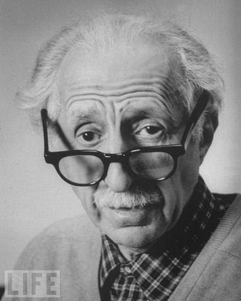
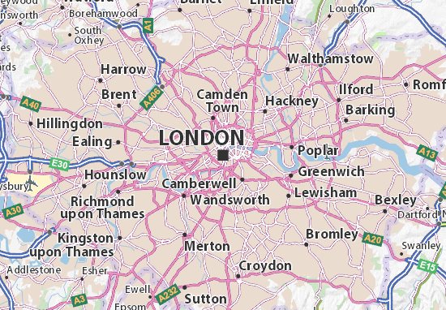

Gjon Mili
 Personal Info
Personal Info

City: London
Country: England
Region: LN
Postal: WC2N 5DU
Address: A4, London WC2N 5DU, UK
Contact
Phone: +3 (455) 782-8814
Tel Fix +707411505
Email: xhemailiadhurim@gmail.com
As soon as we can we will respond to you